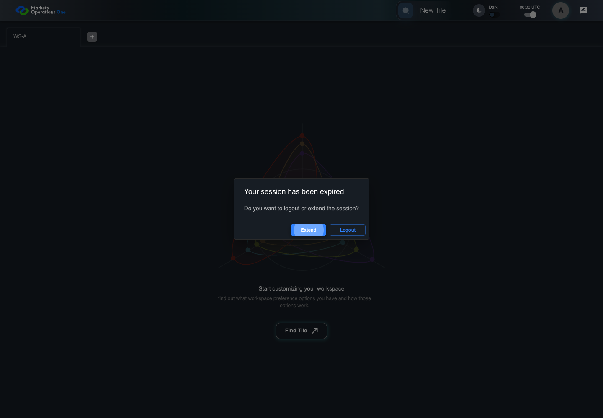

All canonical cases
AUTH-084: Keep Extend available immediately before the dialog cutoff Business acceptance remains unverified. Owner: unknown. Review the canonical definition and fixture limits before acceptance.
Local predicate: PASS . Canonical quality: UNVERIFIED.
Canonical Gherkin definition . Definition version: 2. SHA-256: f77443e2e9db7d90c21151a988037d1fc31549c6a09f283ef592248920d9ac9c.
Canonical Gherkin steps Feature: Expiry
@AUTH-084
Scenario: Keep Extend available immediately before the dialog cutoff
Given User A is authenticated as user-a in an isolated browser context
And the selected fixture tab is labelled "WS-A" inside the tablist named "workspaces" on the Home page
And access A is expired; refresh R expires at controlled time T+600 seconds
And the dialog named "Your session has been expired" on the Home page is visible
When the controlled browser clock reaches T+597.999 seconds
Then the button labelled "Extend" inside the dialog named "Your session has been expired" is enabled
And the dialog named "Your session has been expired" on the Home page is visible Preflight reasons: NO_COMPLETE_REAL_APPLICATION_BINDING, CANONICAL_REVIEW_OR_EVIDENCE_UNRESOLVED.
Planned essential canonical frames: 2. Plan completeness requires separate review.
AUTH-084 open-dialog refresh cutoff at T+597999ms FAIL · application/run-005/auth-084-open-dialog-refresh-cutoff-at-t-597999ms-208660cd6b09-attempt-1 · ACTUAL_APPLICATION_LOCAL_SERVICES
Actual mfe-base React with Playwright clock emulation. Unsigned browser-only JWT fixtures and controlled API responses. No natural lifecycle, real identity, or BFF expiry claim.
2026-10-22T04:18:27.202Z to 2026-10-22T04:18:57.499Z
Assertions and result · Artifact manifest · Exact run inputs and source hashes
Result SHA-256: bbcabed1a0cf3b4aba40207884cf264c0a14c33bcc472575954006b5797d98f4 Retained failure details [
{
"message": "\u001b[31mTest timeout of 30000ms exceeded.\u001b[39m",
"stack": "\u001b[31mTest timeout of 30000ms exceeded.\u001b[39m"
},
{
"message": "Error: page.evaluate: Target page, context or browser has been closed",
"stack": "Error: page.evaluate: Target page, context or browser has been closed\n at runTo (/Users/lushevol/code/github/ratan-release-impact/workbench/e2e/audit-specs/session-timing.spec.ts:68:21)\n at /Users/lushevol/code/github/ratan-release-impact/workbench/e2e/audit-specs/session-timing.spec.ts:233:5",
"location": {
"file": "/Users/lushevol/code/github/ratan-release-impact/workbench/e2e/audit-specs/session-timing.spec.ts",
"column": 21,
"line": 68
},
"snippet": " 66 | expect(remaining).toBeGreaterThanOrEqual(0);\n 67 | await page.clock.runFor(remaining);\n> 68 | expect(await page.evaluate(() => Date.now())).toBe(T + offsetMs);\n | ^\n 69 | }\n 70 |\n 71 | async function setup(page: Page, audit: AuditCapture, id: string,"
}
] Playwright trace
Machine observations Screenshot capture: CAPTURED. Named frames: 3.

1. controlled-session-start WS-A is present at controlled time T before the named timer action.
2026-10-22T04:18:28.140Z · 1440×1000346bebfb79e908c3163bf9545003d6a0ee6db10b10d5d86e7ffda2fa950df617 2. expiry-decision The expired-access dialog is visible before its refresh cutoff.
2026-10-22T04:18:28.186Z · 1440×1000346bebfb79e908c3163bf9545003d6a0ee6db10b10d5d86e7ffda2fa950df617 3. failure-result The visible state when the test failed.
2026-10-22T04:18:57.273Z · 1440×10007bfffa8b7d4caa7b91e118ea4677d36333a2520f92f25507bebc852fed02ac65 Screenshots establish visible state only. Assertions and traces support functional claims.
AUTH-084 open-dialog refresh cutoff at T+597999ms PASS · application/run-006/auth-084-open-dialog-refresh-cutoff-at-t-597999ms-208660cd6b09-attempt-1 · ACTUAL_APPLICATION_LOCAL_SERVICES
Actual mfe-base React with Playwright clock emulation. Unsigned browser-only JWT fixtures and controlled API responses. No natural lifecycle, real identity, or BFF expiry claim.
2026-10-22T04:20:43.115Z to 2026-10-22T04:20:43.875Z
Assertions and result · Artifact manifest · Exact run inputs and source hashes
Result SHA-256: b23b720ee7850464232a6c21656f85b846a181d7bea8f15f672edf741e1def07 Playwright trace
Machine observations Screenshot capture: CAPTURED. Named frames: 4.
1. controlled-session-start WS-A is present at controlled time T before the named timer action.
2026-10-22T04:20:43.682Z · 1440×10003ef73aaa03e0c32fbb634ced2cc4c078615e87a3a550ab3aa3ecba46b5fda935 2. expiry-decision The expired-access dialog is visible before its refresh cutoff.
2026-10-22T04:20:43.718Z · 1440×10003ef73aaa03e0c32fbb634ced2cc4c078615e87a3a550ab3aa3ecba46b5fda935 3. refresh-cutoff-result Extend is available at T+597.999 seconds.
2026-10-22T04:20:43.764Z · 1440×100046d9e4a52140e7cedf75c1cdbd0926280e4eb1ac77f1b728a7447c8d399f9325 4. final-result The final visible state after the named test assertions.
2026-10-22T04:20:43.830Z · 1440×100046d9e4a52140e7cedf75c1cdbd0926280e4eb1ac77f1b728a7447c8d399f9325 Screenshots establish visible state only. Assertions and traces support functional claims.